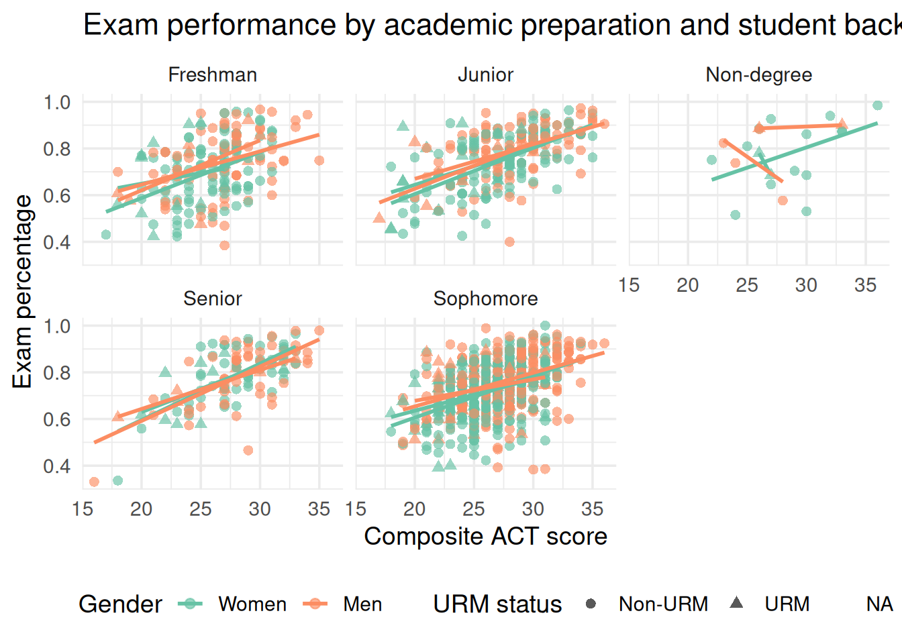
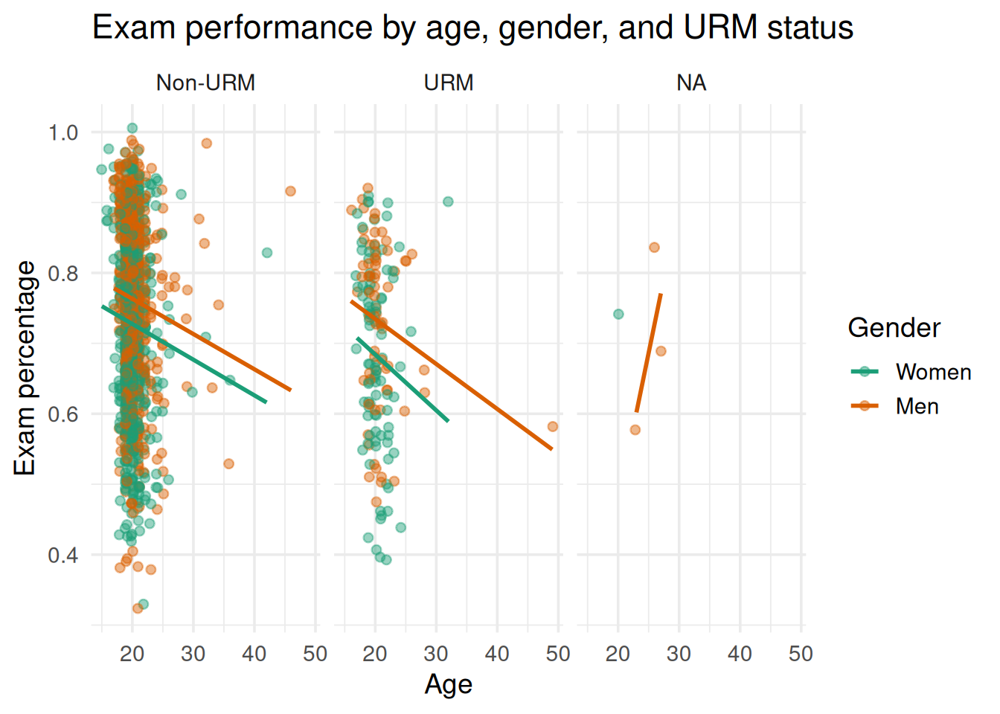
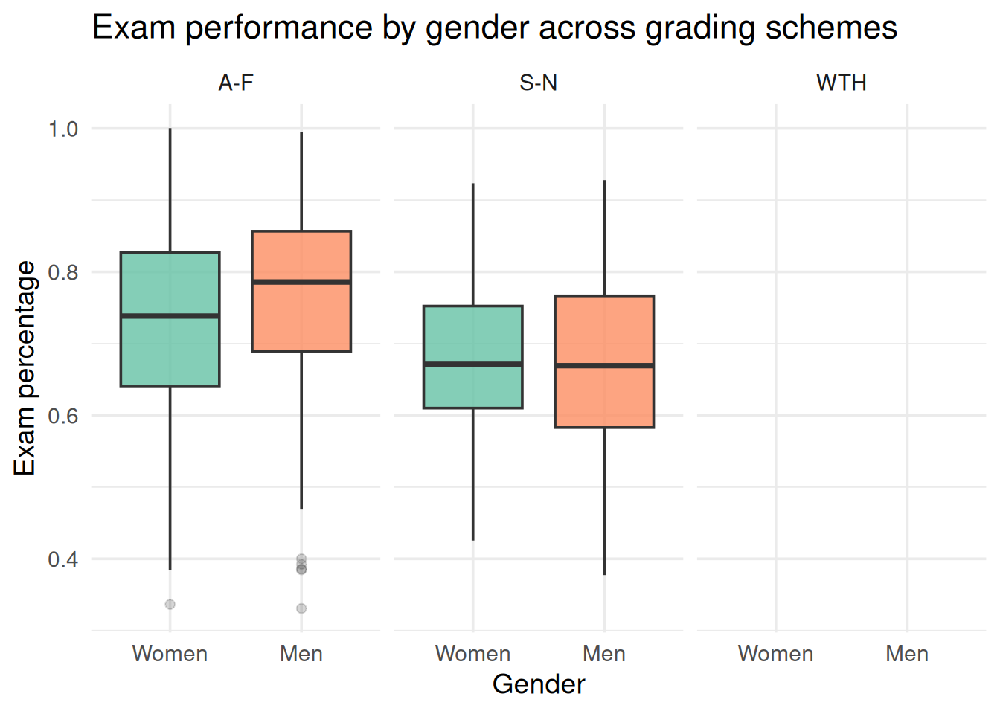

| Metric | Value |
|---|---|
| Students | 1561 |
| Courses | 10 |
| Gender groups | 2 |
| URM groups | 3 |
| Grading schemes | 3 |
Gender, assessment, and performance in introductory biology
Overview
Study overview
This report explores how exam-based assessment relates to student performance in introductory biology using the data file provided in this project. The analysis focuses on how student outcomes vary by gender, academic preparation, underrepresented minority status, course grading design, and other contextual factors.
Variable dictionary
The table below explains the variables in the dataset. The response variables describe the share of course performance associated with exams, coursework, and non-exam assessment, while the predictor variables capture student background and course context.
| Variable | Type | Description |
|---|---|---|
| SUBJECT | Categorical | The academic subject of the course, such as introductory biology. |
| Coursecode | Categorical | The course identifier used to distinguish specific sections or offerings. |
| GRADING_BASIS_ENRL | Categorical | The grading basis used for enrollment in the course, such as A-F or S-N. |
| Gender | Categorical | A binary indicator for student gender, recoded here as Women and Men. |
| AGE | Numeric | Student age in years. |
| YearSchool | Categorical | The student’s class standing, such as freshman, sophomore, junior, or senior. |
| COMP_ACT_SCORE | Numeric | Composite ACT score, used as a proxy for academic preparation. |
| URM | Categorical | Underrepresented minority indicator, recoded here as URM and Non-URM. |
| msl01 | Numeric | One item from the motivation and learning-strategy survey instrument. |
| msl02 | Numeric | One item from the motivation and learning-strategy survey instrument. |
| msl03 | Numeric | One item from the motivation and learning-strategy survey instrument. |
| msl04 | Numeric | One item from the motivation and learning-strategy survey instrument. |
| msl05 | Numeric | One item from the motivation and learning-strategy survey instrument. |
| msl06 | Numeric | One item from the motivation and learning-strategy survey instrument. |
| msl07 | Numeric | One item from the motivation and learning-strategy survey instrument. |
| msl08 | Numeric | One item from the motivation and learning-strategy survey instrument. |
| msl09 | Numeric | One item from the motivation and learning-strategy survey instrument. |
| msl10 | Numeric | One item from the motivation and learning-strategy survey instrument. |
| msl11 | Numeric | One item from the motivation and learning-strategy survey instrument. |
| msl12 | Numeric | One item from the motivation and learning-strategy survey instrument. |
| msl13 | Numeric | One item from the motivation and learning-strategy survey instrument. |
| msl14 | Numeric | One item from the motivation and learning-strategy survey instrument. |
| msl15 | Numeric | One item from the motivation and learning-strategy survey instrument. |
| msl16 | Numeric | One item from the motivation and learning-strategy survey instrument. |
| msl17 | Numeric | One item from the motivation and learning-strategy survey instrument. |
| msl18 | Numeric | One item from the motivation and learning-strategy survey instrument. |
| msl19 | Numeric | One item from the motivation and learning-strategy survey instrument. |
| msl20 | Numeric | One item from the motivation and learning-strategy survey instrument. |
| Exams_percent | Numeric | The share of the course grade associated with exams. |
| Course_percent | Numeric | The share of the course grade associated with coursework. |
| NonExam_percent | Numeric | The share of the course grade associated with non-exam activities. |
| ZExams_percent | Numeric | Z-scored version of Exams_percent for standardized comparison. |
| ZCourse_percent | Numeric | Z-scored version of Course_percent. |
| ZNonExam_percent | Numeric | Z-scored version of NonExam_percent. |
Results
Model 1: academic preparation and demographics
This first model examines whether exam performance varies with gender, age, ACT score, URM status, and class standing.
| term | estimate | std.error | p.value |
|---|---|---|---|
| Gender: Men | 0.020 | 0.006 | 0.001 |
| AGE | -0.003 | 0.003 | 0.315 |
| COMP_ACT_SCORE | 0.017 | 0.001 | 0.000 |
| URM: URM: | 0.007 | 0.010 | 0.481 |
| YearSchoolJunior | 0.026 | 0.011 | 0.019 |
| YearSchoolNon-degree | 0.033 | 0.024 | 0.163 |
| YearSchoolSenior | 0.040 | 0.015 | 0.008 |
| YearSchoolSophomore | 0.009 | 0.009 | 0.341 |

Model 2: interaction between gender and URM status
This model tests whether the relationship between gender and exam performance changes by URM status.
| term | estimate | std.error | p.value |
|---|---|---|---|
| GenderMen | 0.021 | 0.007 | 0.001 |
| URMURM | 0.011 | 0.013 | 0.403 |
| AGE | -0.003 | 0.003 | 0.317 |
| COMP_ACT_SCORE | 0.017 | 0.001 | 0.000 |
| YearSchoolJunior | 0.026 | 0.011 | 0.020 |
| YearSchoolNon-degree | 0.034 | 0.024 | 0.159 |
| YearSchoolSenior | 0.040 | 0.015 | 0.008 |
| YearSchoolSophomore | 0.009 | 0.009 | 0.335 |
| GenderMen:URMURM | -0.009 | 0.020 | 0.645 |

Model 3: grading basis and gender
This model asks whether the grading structure of the course changes the observed gender pattern.
| term | estimate | std.error | p.value |
|---|---|---|---|
| GenderMen | 0.019 | 0.006 | 0.003 |
| GRADING_BASIS_ENRLS-N | -0.036 | 0.016 | 0.022 |
| AGE | 0.003 | 0.002 | 0.244 |
| COMP_ACT_SCORE | 0.018 | 0.001 | 0.000 |
| URMURM | 0.009 | 0.010 | 0.370 |
| GenderMen:GRADING_BASIS_ENRLS-N | -0.005 | 0.025 | 0.850 |

Model 4: full contextual model
The final model combines the main student-background and course-context variables together.
| term | estimate | std.error | p.value |
|---|---|---|---|
| GenderMen | 0.020 | 0.006 | 0.001 |
| AGE | -0.003 | 0.003 | 0.281 |
| COMP_ACT_SCORE | 0.017 | 0.001 | 0.000 |
| URMURM | 0.007 | 0.010 | 0.511 |
| YearSchoolJunior | 0.029 | 0.011 | 0.010 |
| YearSchoolNon-degree | 0.032 | 0.024 | 0.174 |
| YearSchoolSenior | 0.049 | 0.015 | 0.001 |
| YearSchoolSophomore | 0.010 | 0.009 | 0.267 |
| GRADING_BASIS_ENRLS-N | -0.045 | 0.012 | 0.000 |
| Model | r.squared | adj.r.squared | AIC |
|---|---|---|---|
| Model 1: demographics | 0.271 | 0.266 | -1990.892 |
| Model 2: gender × URM | 0.271 | 0.265 | -1989.106 |
| Model 3: grading basis | 0.270 | 0.266 | -1993.070 |
| Model 4: full context | 0.278 | 0.273 | -2001.909 |
Interpretation
Across these models, the pattern suggests that exam performance is shaped by both student characteristics and course design. Gender differences appear alongside preparation measures and grading context, which is why it is useful to compare multiple regression specifications rather than relying on a single model.
Study context
The original study behind this dataset is available from Dryad here: https://datadryad.org/dataset/doi%3A10.5061/dryad.53t31?utm.
The study examines whether exam-based assessment may disadvantage women in introductory biology courses and provides the broader scientific context for the variables used in this analysis.